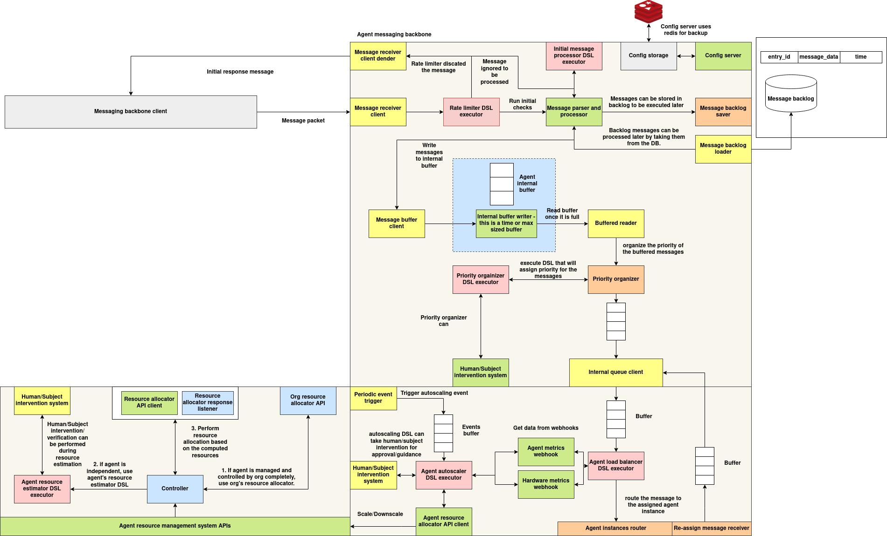

Agent communication system
Architecture


Every deployed agent (subject) has one agent executor in front of its agent instances. The executor is the agent's single entry point. It receives tasks, applies the subject's policies, and dispatches each task to one instance. Instances process tasks with the agents SDK and send results back to wherever the task asked.
The diagram shows the overall design. This page describes what the agent executor (services/agents/agents-executor) and the agents SDK implement today.
┌──────────────────────────── Agent Executor (per subject) ────────────────────────────┐
HTTP /submitTask ─┐ │
├─► pre_process ─► Message Pre-check ─► Rate Limiter ─► Message Backlog ─► Load Balancer ─┼─► Redis "jobs:inbox"
P2P (NATS) ───────┘ (policy) (policy) (policy) (policy) │ of instance
<subject>__executor │
│ Autoscaler (policy) ── scale up/down ──► Deployer /instances
└─────────────────────────────────────────────────────────────────────────────────────┘
Agent instance: Redis BRPOP "jobs:inbox" ─► on_preprocess ─► on_data ─► result to output_ptr (Redis / exchange / mesh)
The system has three parts:
- Agent messaging backbone — task intake and policy checks in the executor.
- Agent instance routing and load balancing — choosing an instance and delivering the task.
- Agent resource management — instance discovery and autoscaling.
All decision points are policies taken from the subject's integrations.policies (see Agent Specification). Each is looked up by policy_type, and its code is loaded from the Policy DB (POLICY_DB_URL). A hook with no policy uses a built-in default.
1. Agent Messaging Backbone
Message intake
The executor accepts tasks from two places:
| Entry point | Protocol | Notes |
|---|---|---|
POST /submitTask |
HTTP (port 9000, exposed as a NodePort) | Used by the Delegate API and by context.direct |
NATS subject <SUBJECT_ID>__executor |
P2P mesh | Messages must look like the HTTP body below. A message wrapped as {"event": "custom_event", "event_data": {...}} is unwrapped first; join / remove / task_result events are ignored |
Task message:
{
"event_type": "task",
"task_id": "task-001",
"task": { "text": "..." },
"session_id": "sess-1",
"origin": {
"type": "redis",
"host": "<redis host>",
"port": 6379,
"output_queue": "sess-1",
"exchange_id": "delegate"
}
}
event_type must be "task"; anything else is rejected (HTTP 500 / dropped on NATS). The executor converts the message into:
{
"session_id": "<new uuid>",
"message_data": { "task_id": "task-001", "job_data": { "text": "..." }, "output_ptr": { ...origin... } }
}
The executor assigns a new random
session_idto every message; thesession_idin the request is not used. Per-session policies (rate limiting, backlog) therefore see each message as its own session.
Policy pipeline
Each message passes through these stages in order. The input to each policy is {"session_id": ..., "message_data": ...}.
| Stage | policy_type |
Policy returns | Default (no policy) |
|---|---|---|---|
| Message pre-check | message_prechecker |
{"allowed": bool, "reason": {...}} or a bool |
allow |
| Rate limiter | rate_limiter |
{"allowed": bool, "metadata": {...}} or a bool. The policy is given a rate_counter with per-session counters and metadata |
allow |
| Message backlog | message_backlog |
{"backlogged": true, "reason": {...}} to hold the message, or {"backlogged": false, "messages": [...]} to release one or more messages. The policy is given the backlog_store |
release the message unchanged |
- If the pre-check rejects a message, the result is
blockedat stagepre_check. If the rate limiter rejects it, the result isblockedatrate_limit. Over HTTP both return 429 withstageandreason. - A backlogged message is acknowledged but not dispatched. The backlog policy decides when to release held messages.
- An exception inside any of these policies is treated as "allow / not backlogged".
Storage backends:
| Component | Env var | Values | Redis settings |
|---|---|---|---|
| Rate counter | RATE_LIMITER_BACKEND |
memory (default) / redis |
REDIS_URL, or REDIS_HOST / REDIS_PORT / REDIS_PASSWORD |
| Backlog store | BACKLOG_BACKEND |
memory (default) / redis |
REDIS_URL (required for redis); keys backlog:<session_id> |
HTTP API
POST /submitTask — run the pipeline and dispatch:
| Result | HTTP | Body |
|---|---|---|
| Blocked | 429 | {"success": false, "error": "blocked", "stage": "pre_check" \| "rate_limit", "reason": {...}} |
| Ready / backlogged | 202 | {"success": true, "message": "task received for processing", "result": {"status": "ready" \| "backlogged", ...}} |
| Error | 500 | {"success": false, "error": "..."} |
POST /dryRun — run the pre-check, rate limiter and backlog decision without dispatching. The body is {"session_id": "...", "message_data": {...}} (message_data.is_dry_run is set to true). Returns 429 if blocked, {"success": true, "message": "ok"} if ready.
GET /healthz — {"ok": true}.
The TaskInitiator client in the SDK (core.direct) and the delegation proxy wrap these endpoints: submit_task(...), dry_run(...) and healthz(). A 429 response raises BlockedError(stage, reason).
2. Agent Instance Routing and Load Balancing
Messages released by the pipeline go to the Load Balancer, which runs on its own thread with an input queue.
- For each message the
load_balancerpolicy is called with{"session_id", "message_data"}. It is givenget_instances()(current instance IDs) and theload_balancerobject. - The policy returns the target instance as a string,
{"ok": true, "instance": "<id>", "metadata": {...}}, or a(instance_id, metadata)tuple. The default picks a random instance. - The task (
message_data:task_id,job_data,output_ptr) isLPUSHed to the instance's Redis sidecar at<instance_id>-<subject_id>.agents.svc.cluster.local:6379, listjobs:inbox(override withLB_REDIS_QUEUE_KEY).
If the policy errors or returns no instance, the message is not delivered (it is only recorded internally).
Agent instances
Each instance runs the agent code through the SDK (core.main.main(AgentClass)):
- A Redis worker
BRPOPs tasks fromREDIS_STREAM(defaultjobs:inbox) onREDIS_URL(defaultredis://localhost:6379/0, the sidecar). AgentExecutor.process_taskruns optional transformer / pre-processing policies, thenon_preprocess, thenon_datafor each returned task, then optional post-processing.- Results are delivered according to the task's
output_ptr:
output_ptr.type |
Delivery | Requires exchange_id |
|---|---|---|
redis |
LPUSH a JSON result to output_queue on host:port (used by the Delegate API) |
yes |
exchange |
Submitted to the job exchange (OutputReporter) |
yes |
mesh |
P2P reply to sender_subject_id (internal_task_id as task ID) |
yes |
Results without output_ptr.exchange_id are not delivered.
- The result body is
{"task_id", "job_output", "job_output_metadata", "job_output_trace_data", "is_error", "error_data"}. - If
on_preprocessreturnsNone, no result is produced, so a caller waiting on the result (for examplesubmit-and-wait) keeps waiting.
Instances also run a WebSocket listener (WS_PORT, default 8765) for synchronous task calls; see Chat and P2P.
3. Agent Resource Management
Instance discovery
AgentsUpdateNotifier watches pods in the agents namespace with label subjectId=<SUBJECT_ID>. It reports their instanceId labels to the load balancer whenever the set changes, and on a periodic refresh.
Autoscaler
When DEPLOYER_API_URL is set, the executor runs an AutoScaler thread every 30 seconds:
- It builds the state
{"instance_count", "instance_ids", "queue_depth", "subject_id"}, wherequeue_depthis the load balancer's input queue size. - It calls the
autoscalerpolicy, which is givenget_instances()andget_queue_depth(). - The policy returns
"scale_up","scale_down"orNone(or{"action": ...}). The default is no action.- scale_up —
POST <DEPLOYER_API_URL>/instanceswith{"subject_id", "count": 1, "meshes", "delegate_api_url"}(delegate_api_urlcomes fromAGENT_DELEGATE_URL). - scale_down —
DELETE <DEPLOYER_API_URL>/instanceswith{"subject_id", "instance_ids": [<last instance>]}.
- scale_up —
The deployer currently starts executors with
SUBJECT_ID,SUBJECT_DB_URL,POLICY_DB_URLandMESH_LISTonly. WithoutDEPLOYER_API_URLthe autoscaler is disabled (a warning is logged).
Deployer instance API
| Method & Path | Body | Description |
|---|---|---|
POST /instances |
{"subject_id", "count", "meshes", "delegate_api_url"} |
Create count instances with random 5-character IDs |
DELETE /instances |
{"subject_id", "instance_ids": [...]} |
Remove instances |
Executor Configuration
| Environment variable | Required | Description |
|---|---|---|
SUBJECT_ID |
Yes | Subject served by this executor |
SUBJECT_DB_URL |
Yes | Subjects service (the subject spec and its policies are loaded at start-up) |
POLICY_DB_URL |
Yes | Policy DB used to load policy code |
MESH_LIST |
No | {"meshes": [{"mesh_id", "url"}]} for P2P intake |
RATE_LIMITER_BACKEND, BACKLOG_BACKEND, REDIS_URL, REDIS_HOST, REDIS_PORT, REDIS_PASSWORD |
No | Policy state storage (see above) |
LB_REDIS_QUEUE_KEY |
No | Instance queue name (default jobs:inbox) |
DEPLOYER_API_URL |
No | Enables the autoscaler |
AGENT_DELEGATE_URL |
No | Passed to instances created by the autoscaler |
Related Services
- Delegation proxy (
delegation-system/delegation-proxy) —POST /api/submit-and-waitlooks up the agent's executor URL in runtime subjects (RUNTIME_SUBJECTS_API_URL), submits the task with a Redisoriginwhoseoutput_queueis the session ID, and waits (BRPOP, no timeout) for the result. The response is{"success": true, "ack": {...}, "output": <result body>}.GET /healthzreports health. - Chat server — a WebSocket front-end that forwards chat messages to the Delegate API; see Agent Chat Server.
- P2P meshes — presence and events between agents; see Agent P2P Module.